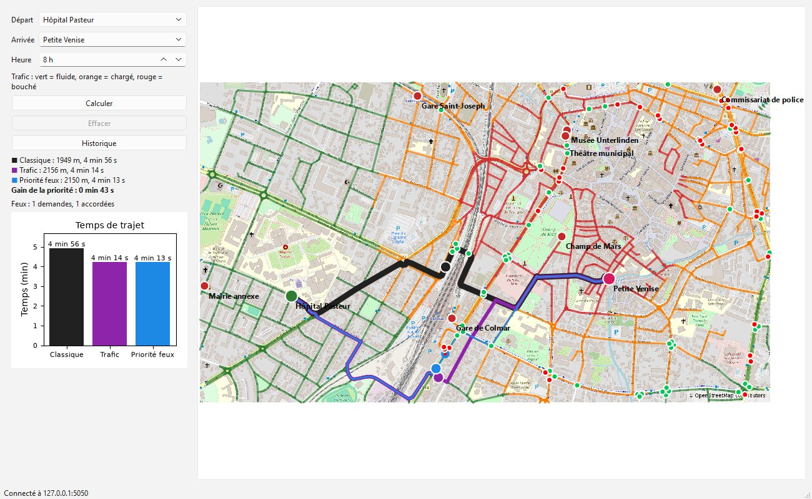
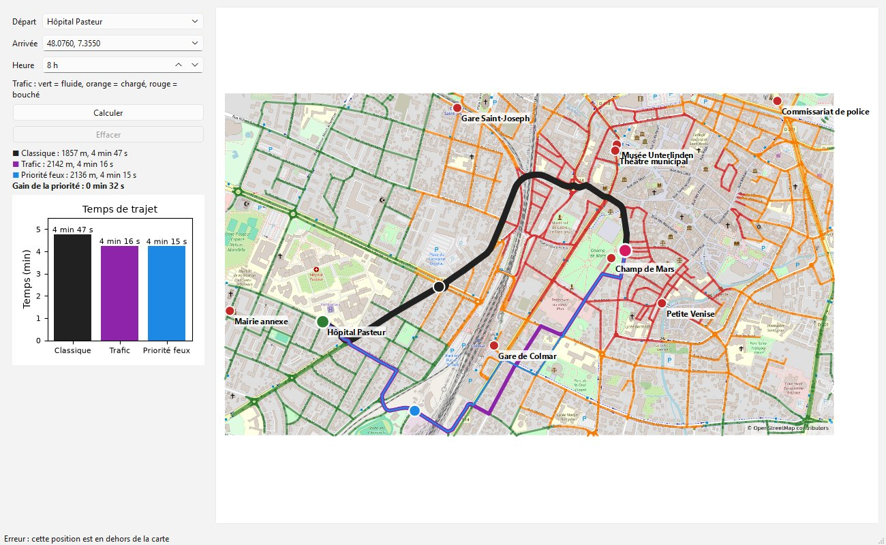

Le projet
Dans la mise en situation, notre binôme (« Les Nouveaux » : Youssef Jabrane et moi) joue le rôle d'un cabinet de développement qui répond à une ville. Le besoin : réduire le temps de trajet des véhicules d'urgence entre un point A et un point B, en tenant compte du trafic et de l'heure. L'application Python compare trois trajets (classique, adapté au trafic, avec priorité aux feux) sur le vrai réseau de rues du centre de Colmar.
L'architecture est client / serveur. Ma partie est le client (interface PyQt6, carte, animation, communication réseau TCP et UDP) et le déploiement (Makefile, VM Linux, supervision). Youssef est responsable du serveur (modèle de la ville, Dijkstra, feux, base de données). Je ne revendique ici que mon propre travail.
| Compétence du référentiel | Apprentissages critiques ciblés |
|---|---|
| Programmer : Créer des outils et applications informatiques pour les R&T | AC23.03, AC23.02 |
| Connecter : Connecter les entreprises et les usagers | AC22.05 |
| Administrer : Administrer les réseaux et l'Internet | AC21.03, AC21.04, AC21.06 |
Programmer
Créer des outils et applications informatiques pour les R&T · Niveau 2 : Développer une application R&T
Développement du client d'une application communicante, à partir du cahier des charges que nous avons rédigé et rendu le 24/09/2026. Le sujet impose Python 3, PyQt6, des sockets brutes (pas de MQTT, Twisted ni Scapy), des messages JSON et une règle de sécurité stricte : aucun thread ne modifie directement l'interface, tout passe par les signaux et slots de Qt.
J'ai développé :
- la fenêtre principale (
client/fenetre.py) : choix du départ, de l'arrivée (liste, adresse, coordonnées GPS ou clic sur la carte) et de l'heure ; - la carte (
client/carte.py) : réseau réel de Colmar extrait d'OpenStreetMap, trafic coloré selon l'heure, 86 feux réels, animation des trois véhicules ; - la couche réseau (
client/reseau.py) : un client TCP vers le serveur (port 5050) et un client UDP véhicule → carrefours (V2I, port 5051), chacun dans sonQThread; - les fonctions
encoderetdecoderdu protocole partagé (sae/protocole.py).
Utiliser un protocole réseau pour programmer une application client/serveur
C'est le cœur de mon travail. J'ai programmé directement sur les sockets :
- en TCP, la connexion est un flux d'octets sans frontières entre messages. J'ai donc utilisé un protocole applicatif à trames (JSON +
\n) et unDeframeurqui reconstitue les messages coupés en plusieursrecv(); - en UDP, un datagramme est un message entier : pas de
\n, pas de connexion, et la perte d'un datagramme ne doit pas bloquer l'application ; - le choix de deux protocoles est justifié par le métier : TCP pour les échanges fiables avec le serveur (ville, trajets, historique), UDP pour les demandes de priorité aux feux, courtes et fréquentes, comme un vrai système V2I de préemption des feux.
Développer une application à partir d'un cahier des charges donné, pour le Web ou les périphériques mobiles
J'ai suivi le cahier des charges fonctionnalité par fonctionnalité (tableau MoSCoW) et j'ai vérifié l'écart entre ce qu'il promettait et le code dans un document de comparaison (14/10/2026). Par honnêteté : l'application est une application de bureau (PyQt6), pas une application Web ou mobile. Je retiens donc surtout la partie « à partir d'un cahier des charges donné » de cet AC.
Ce que j'ai fait et ma démarche
J'ai avancé par petites étapes testables, dans l'ordre du rétroplanning : d'abord une carte en grille (A1 à F6) dessinée dans une QGraphicsScene avec un chemin écrit à la main, puis la connexion TCP dans un QThread, puis les trois trajets, les feux, l'animation et enfin la priorité en UDP. Avant que le serveur de Youssef soit prêt, j'ai écrit un faux serveur de test (outils/faux_serveur.py) qui répond aux messages du protocole. J'ai ainsi pu tester tout le client sans attendre, et ce faux serveur sert aussi de spécification des messages attendus.
Difficultés techniques et solutions
- Fenêtre figée.
recv()bloque tant que rien n'arrive. Dans le thread de l'interface, la fenêtre se fige. Solution : le réseau tourne dans unQThreadqui émet un signalmessage_recu(dict). La fenêtre réagit dans son propre thread. - Arrêt propre du thread. Un
recv()bloqué empêche de fermer l'application. J'ai ajouté unselect()avec un délai de 0,2 s pour revérifier régulièrement un drapeauactif. - Plantages silencieux. Avec PyQt6, une exception dans une méthode appelée par un signal ferme l'application. J'ai entouré l'aiguillage des messages d'un
try/except: un message incomplet affiche une erreur au lieu de tout fermer. - UDP sous Windows.
select()refusait une socket UDP non liée, et un envoi vers un port fermé provoquait uneConnectionResetErrorà la réception suivante. J'ai lié la socket au port 0 et ignoré cette erreur, sans arrêter le thread. - Passage à une vraie ville. L'enseignant attendait plus d'originalité que la grille. J'ai extrait le centre de Colmar d'OpenStreetMap (2 715 nœuds, 2 944 routes), converti les coordonnées GPS en mètres (projection de Mercator) et superposé le graphe sur une image de fond.
Analyse critique : limites de mon travail
- Le temps du trajet « priorité » est calculé par le serveur en supposant que tous les feux passeront au vert, avant que le véhicule envoie ses
PRIORITY_REQUEST. Un refus (PRIORITY_DENY) n'aurait donc pas d'effet sur le temps affiché. - La règle du cycle des feux (30 s vert, 30 s rouge) est écrite à la fois dans le client et dans le serveur. Si l'un change, l'affichage devient faux : il faudrait que le serveur l'envoie.
- Le protocole a évolué plus vite côté client (12 types de messages) que le fichier
protocole.pycommun (5 types). J'aurais dû faire valider chaque nouveau message par Youssef au fur et à mesure. - À COMPLÉTER J'ai utilisé un assistant IA pour m'aider à écrire et simplifier une partie du code (détails dans
IAGraphie.pdf). J'ai ensuite relu et simplifié le client (moins de 700 lignes) et suivi un plan d'apprentissage en 6 séances pour pouvoir expliquer chaque fonction.
Ce que j'ai appris
La différence concrète entre un flux TCP et des datagrammes UDP, le découpage en trames d'un protocole applicatif, la programmation concurrente avec QThread et les signaux, et l'intérêt d'un faux serveur pour développer et tester les deux côtés en parallèle.
Commits Git
- À COMPLÉTER lien vers le commit du client TCP dans un QThread (
client/reseau.py) - À COMPLÉTER lien vers le commit de la liaison UDP V2I et des demandes de priorité
- À COMPLÉTER lien vers le commit de la carte de Colmar (OpenStreetMap)
- À COMPLÉTER lien vers ma branche du dépôt
Extrait 1 : client TCP dans un thread
def run(self):
"""Code exécuté dans le thread (lancé par start())."""
try:
self.sock = socket.create_connection((self.hote, self.port), timeout=5)
except OSError as e:
self.erreur.emit(f"connexion impossible à {self.hote}:{self.port} ({e})")
return
self.connecte.emit()
deframeur = Deframeur()
try:
while self.actif:
# On attend au plus 0,2 s qu'il y ait quelque chose à lire,
# pour revérifier self.actif régulièrement (arrêt propre).
lisibles, _, _ = select.select([self.sock], [], [], 0.2)
if not lisibles:
continue
octets = self.sock.recv(4096)
if not octets: # b"" : le serveur a fermé la connexion
self.erreur.emit("le serveur a fermé la connexion")
break
for message in deframeur.alimenter(octets):
self.message_recu.emit(message)
except (OSError, ValueError) as e: # ValueError : message JSON invalide
self.erreur.emit(f"erreur réseau ({e})")
finally:
self.sock.close()client/reseau.py, classe ClientReseau. On y voit la connexion TCP, la lecture non bloquante avec select, le découpage des trames, la détection de la fermeture côté serveur et le respect de la règle « aucun thread ne touche l'IHM » (tout passe par emit).
Extrait 2 : liaison UDP véhicule → carrefour
def envoyer(self, message):
"""Envoie un datagramme (sans "\n" : UDP garde les frontières des messages)."""
try:
self.sock.sendto(json.dumps(message).encode("utf-8"), self.adresse)
except OSError:
pass # UDP ne garantit rien : un datagramme perdu n'arrête pas l'appliclient/reseau.py, classe ClientV2I.
Extrait 3 : aiguillage des messages reçus
def traiter_message(self, message):
"""Aiguille chaque message reçu selon son "type".
try : avec PyQt6, une erreur dans une méthode appelée par un signal FERME l'appli.
Un message incomplet (un champ qui manque...) affiche donc juste une erreur.
"""
try:
if message["type"] == "CITY":
self.afficher_ville(message)
elif message["type"] == "TRAFFIC":
self.carte.colorer_trafic(message["densites"])
elif message["type"] == "ROUTES":
self.afficher_routes(message)
elif message["type"] == "HISTORY":
self.afficher_historique(message["simulations"])
elif message["type"] == "ERROR":
self.afficher_erreur(message["raison"])
except (KeyError, ValueError, TypeError) as e:
self.afficher_erreur(f"message {message['type']} incomplet ({e})")client/fenetre.py (extrait légèrement raccourci : le cas ROUTE est omis).
Captures d'écran légendées




Extrait du compte rendu hebdomadaire (semaine 1, ma partie)
« J'ai développé la partie réseau du client dans un QThread, pour que la fenêtre ne se bloque pas pendant les échanges avec le serveur. […] j'ai connecté le client au serveur de Youssef en local sur l'adresse 127.0.0.1:5050. Le client a envoyé le message {"type": "GET_CITY"} et la réponse du serveur a bien été reçue par le client. »
Connecter
Connecter les entreprises et les usagers · Composante essentielle : « en communiquant avec le client et les différents acteurs impliqués »
Phase de cadrage puis de pilotage du projet, du 24/09 au 15/11/2026 : analyse du besoin du « client » (la ville), rédaction du cahier des charges, découpage du travail en binôme, suivi de l'avancement et adaptation du périmètre quand l'enseignant a demandé plus d'originalité.
Organiser un projet pour répondre au cahier des charges
- Analyse du besoin avec la méthode QQOQCP (utilisateur visé : le régulateur des véhicules d'urgence ; trois étapes envisagées : simulation, carrefour connecté, déploiement en ville).
- Rédaction du cahier des charges en 4 parties avec un tableau MoSCoW (Must / Should / Could), une complexité de 1 à 5 et un coût estimé par fonctionnalité (94 h au total, environ 47 h par étudiant).
- Rétroplanning en 7 jalons, suivi des tâches dans ClickUp, comptes rendus hebdomadaires.
- Contrôle de conformité : un tableau qui compare chaque ligne du cahier des charges à l'état réel du code.
Ce que j'ai fait
Avec Youssef, nous avons découpé le projet selon l'architecture : le client (moi) et le serveur (lui). Le seul fichier à écrire à deux était le protocole, pour que chacun puisse avancer seul une fois les messages fixés. Le 14/10, j'ai comparé le cahier des charges au code pour savoir où nous en étions vraiment.
Difficultés et solutions
- Changement de périmètre. La grille A1-F6 prévue ne répondait pas à la demande d'originalité. Nous avons choisi la vraie carte de Colmar. Je l'ai présenté comme une évolution du cahier des charges (« Déploiement dans une ville », un Should), pas comme une simple envie.
- Décalage d'avancement dans le binôme. Au 14/10, le client était en avance sur le planning, mais le serveur réel n'existait pas encore dans le dépôt. Pour ne pas bloquer, j'ai écrit le faux serveur et proposé par écrit les nouveaux messages JSON à Youssef (
ROUTES,TRAFFIC,HISTORY…). Limite : ces messages ont été ajoutés au client avant d'être validés à deux. À COMPLÉTER : comment cela s'est réglé - Outils hors cahier des charges. Docker et Grafana ne figuraient pas dans la liste prévue. J'ai demandé l'autorisation à l'enseignant avant de les intégrer, et nous les présentons comme un bonus.
Ce que j'ai appris
Un cahier des charges sert aussi d'outil de contrôle, pas seulement de document de départ. Un contrat d'interface (le protocole) permet de travailler en parallèle, à condition de le mettre à jour ensemble. Un écart doit être signalé et argumenté plutôt que caché.
Extrait du cahier des charges (rendu le 24/09/2026) : tableau MoSCoW
| Fonctionnalité | Priorité | Complexité | Coût |
|---|---|---|---|
| Communication client / serveur par socket | Must have | 4 | 10 h |
| Gestion des communications avec threads | Must have | 4 | 8 h |
| Contrôle des feux pour le véhicule prioritaire | Should have | 4 | 8 h |
| Déploiement dans une ville | Should have | 5 | 10 h |
Tableau de comparaison cahier des charges / code (14/10/2026)
« Côté client (David) : presque tout ce que le cahier des charges promet est déjà visible à l'écran : carte, 3 trajets, animation, feux, priorité UDP, graphique, historique. »
- À COMPLÉTER photo de l'analyse QQOQCP
- À COMPLÉTER capture du tableau ClickUp avec mes tâches terminées
- À COMPLÉTER liens vers les comptes rendus hebdomadaires et le cahier des charges (PDF)
Administrer
Administrer les réseaux et l'Internet · Niveau 2 : Administrer un réseau
Préparation du déploiement et de la démonstration : faire fonctionner l'application sur deux machines (serveur et client) dans des VM Linux, rendre l'installation reproductible, et superviser les simulations.
Déployer des postes clients et des solutions virtualisées
Installation de l'application sur des VM Linux, avec le serveur sur une machine et le client sur l'autre (adresse du serveur passée en paramètre : make client HOTE=<ip du serveur>).
Déployer des services réseaux avancés et systèmes de supervision
Tableau de bord Grafana de 5 panneaux, déployé avec docker-compose et le plugin SQLite, qui lit la base simulations.db des simulations.
Travailler en équipe
Travail en binôme avec un contrat d'interface partagé (le protocole) et une branche Git par personne.
Ce que j'ai fait
J'ai écrit un Makefile qui fonctionne sous Windows et sous Linux (make installer, make client, make serveur, make faux-serveur, make tests, make ip, make arreter). Il détecte le système, car le chemin du Python du .venv et les commandes pour afficher l'IP ou arrêter les processus diffèrent. J'ai rédigé un guide d'installation pour deux VM.
Difficultés et solutions
- Différences Windows / Linux : traitées dans le Makefile avec
ifeq ($(OS),Windows_NT). - Bibliothèques système manquantes pour PyQt6 sur la VM client : documentées dans le guide d'installation. À COMPLÉTER : laquelle, et comment je l'ai trouvée
- Environnement Python cassé :
.venvréparé, versions exactes figées dansrequirements.txt(PyQt6 6.11.0, matplotlib 3.11.2…). - À COMPLÉTER Test sur deux machines : mode réseau des VM (pont ou réseau interne), ports TCP 5050 et UDP 5051 ouverts dans le pare-feu.
Analyse critique
La supervision Grafana est un bonus : la base était encore vide au 14/10, donc le tableau de bord n'a de valeur que si les simulations sont réellement enregistrées par le serveur final. À COMPLÉTER : état à la démo
Ce que j'ai appris
Rendre une installation reproductible prend du temps : il faut la tester sur une machine vierge en suivant uniquement le README.
Extrait du Makefile
# Adresse IP de la machine qui fait tourner le serveur (voir docs/installation.md).
# Changez-la ici une fois, ou donnez-la au lancement : make client HOTE=192.168.56.10
HOTE = 127.0.0.1
ifeq ($(OS),Windows_NT)
PYTHON = .venv/Scripts/python.exe
AFFICHER_IP = ipconfig
else
PYTHON = .venv/bin/python
AFFICHER_IP = hostname -I
endifMakefile à la racine du dépôt (extrait).
- À COMPLÉTER capture du tableau de bord Grafana
- À COMPLÉTER capture du client sur une VM connecté au serveur sur l'autre VM (« Connecté à 192.168.x.x:5050 ») et sortie de
ip asur les deux VM - À COMPLÉTER lien vers le commit du
docker-compose.ymlet du Makefile
Bilan personnel
À COMPLÉTER 5 à 8 lignes : ce qui a le mieux marché, ce que je referais autrement (valider le protocole à deux plus tôt, faire dépendre le temps « priorité » de la réponse UDP) et la compétence où j'ai le plus progressé.
Libellés des AC recopiés du référentiel national du BUT Réseaux & Télécommunications.